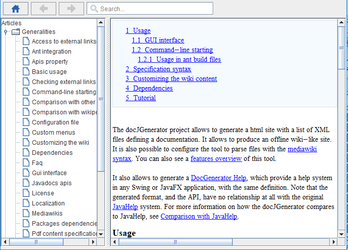
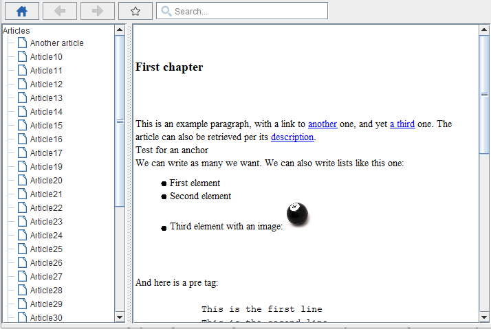
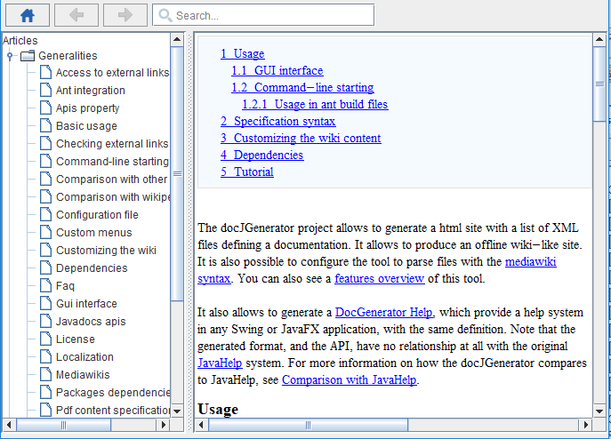
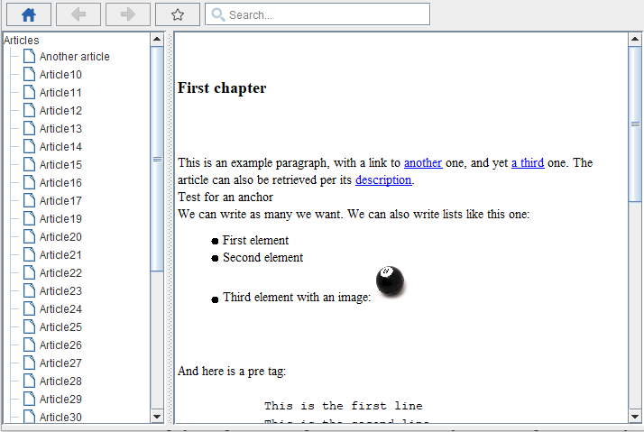

DocGenerator Help feature
1 Overview
2 Help content generation
2.1 Configuration example
2.2 Help content optimization
3 API usage
3.1 Example with Swing
4 Dependencies
5 Help usage
6 Notes
7 See Also
2 Help content generation
2.1 Configuration example
2.2 Help content optimization
3 API usage
3.1 Example with Swing
4 Dependencies
5 Help usage
6 Notes
7 See Also
The docJGenerator tool allows to provide a help system in any Swing or JavaFX application. Note that the generated format, and the API, have no relationship at all with the original JavaHelp system.
Note that:
Note that setting the "resolveAPILinks" option can also be useful when generating the Help content. See Resolving API links.
The JavaFX API uses the WebView class. This class is not able to render images which are local to a zip file as it is the case for the articles packaged for the help system. If you choose to optimize the help content is for the JavaFX API, the images will be inlined in the the HTML files themselves, encoded in Base64. However the Swing HTMLEditorKit is not able to render images inlined in HTML files, encoded in Base64.
Note that the generated zip file contain a
The generated help content can be used either for a Swing or JavaFX application. The help content will be presented in a component which can be integrated in any GUI[2]
The Help component[3]
Example without a glossary:

Example with a glossary:

Overview
To provide a help system for your application, you need to:- Use the wiki definition (as for any wiki generation), and generate the help content with the
helpoutput type. The result will be a zip file which will contain both the wiki and the associated Metadata - Use the API which is able to produce a help component with this zip file
Note that:
- It is also possible to provide a context-sensitive help on components
- It is possible to specify and create the Help content manually, including the metadata
Help content generation
To generate the help content, you should use the "help" output type. The help content generation will produce by default a zip file in the same directory than the output directory. You can specify the output type in the GUI interface, the command-line, or the configuration file. Several options can be specified to customized the help content generation:- "helpFileName": the name of the zip file (used only if the path of the zip file is not defined)
- "helpFile": the path of the zip file
- "helpOptimizedForSwing": specifies if the help content is optimized for the Swing API (true by default). If this property is set to false, then the help content will be optimized for the JavaFX API. See also help content optimization
- "helpContent": the optional file which specifies how the chapters in the help content will be created. See Help content configuration for more information
- "helpPageWidth": the page width used for specifying the images width for the help content[1]
Using a percentage width for images would not work for the help content, so the generator will compute the image width in this case by using this value for the overall "page width". The page width will be set by default to 600 if not specified
Note that setting the "resolveAPILinks" option can also be useful when generating the Help content. See Resolving API links.
Configuration example
Here we have a configuration example for the ant integration:<java classname="org.docgene.main.DocGenerator"> <arg value="-input=wiki/input"/> <arg value="-output=wiki/output"/> <arg value="-outputType=help"/> <arg value="-helpContent=wiki/helpContent.xml"/> <classpath> <pathelement path="docGenerator.jar"/> </classpath> </java>
Help content optimization
By default the help content is optimized for the Swing API. However the content of the help articles would not be seen correctly using the JavaFX help API. The "helpOptimizedForSwing" property allows to specify how the help content will be encoded.The JavaFX API uses the WebView class. This class is not able to render images which are local to a zip file as it is the case for the articles packaged for the help system. If you choose to optimize the help content is for the JavaFX API, the images will be inlined in the the HTML files themselves, encoded in Base64. However the Swing HTMLEditorKit is not able to render images inlined in HTML files, encoded in Base64.
Note that the generated zip file contain a
README.txt file which indicates for which format the Help content has been generated, and also if the content allows a full text search.
API usage
Main Article: Help API overview
The generated help content can be used either for a Swing or JavaFX application. The help content will be presented in a component which can be integrated in any GUI[2]
The Swing and the JavaFX APIs are very similar
. See: - Help Swing API for using the Swing API
- Help JavaFX API for using the JavaFX API
Example with Swing
// get the zip file as an URL URL url = ... try { // create the Help factory JavaHelpFactory factory = new JavaHelpFactory(url); factory.create(); ArticlesModel model = factory.getModel(); // create the viewer component SwingHelpContentViewer viewer = new SwingHelpContentViewer(); viewer.installModel(model); JComponent pane = viewer.getComponent(); // do whatever you want with the component } catch (IOException | SAXException ex) { ex.printStackTrace(); }
Dependencies
The Help system does not have any other libraries dependencies, except if the full text search is set. In that case theelasticlunr.jar library must be in the same directory as the Help system jar file, or in the classpath of the library using it.
Help usage
Main Article: Help usage
The Help component[3]
Both a Swing and a JavaFX implementations exist
allows to navigate between the wiki articles: - The left panel shows a tree with all the article titles
- The right panel shows the content of the currently selected article
- The toolbar presents:
Example without a glossary:

Example with a glossary:

Notes
- ^ Using a percentage width for images would not work for the help content, so the generator will compute the image width in this case by using this value for the overall "page width". The page width will be set by default to 600 if not specified
- ^ The Swing and the JavaFX APIs are very similar
- ^ Both a Swing and a JavaFX implementations exist
See Also
- Help Swing API: This article explains how to use the Help Swing API
- Help JavaFX API: This article explains how to use the Help JavaFX API
- Context-sensitive Help: This article explains how to use the context-sensitive Help
- Comparison with JavaHelp: This article compares the help feature of docJGenerator with the JavaHelp system
- Help system tutorial: This article is tutorial which explains how to produce and use a Help content in a Swing application
×

Categories: javahelp